Школам
Биология 9–11 класс, STEAM-кружки, проектная деятельность, профориентация.
- Урок «Царства живого» наглядно
- Проект на школьную конференцию
Образовательная биотехнология
Шесть культур микроорганизмов вырастили в лаборатории, остановили их рост и залили прозрачным полимером - получился учебный образец, который можно вертеть в руках и разглядывать хоть весь урок, ничем не рискуя.
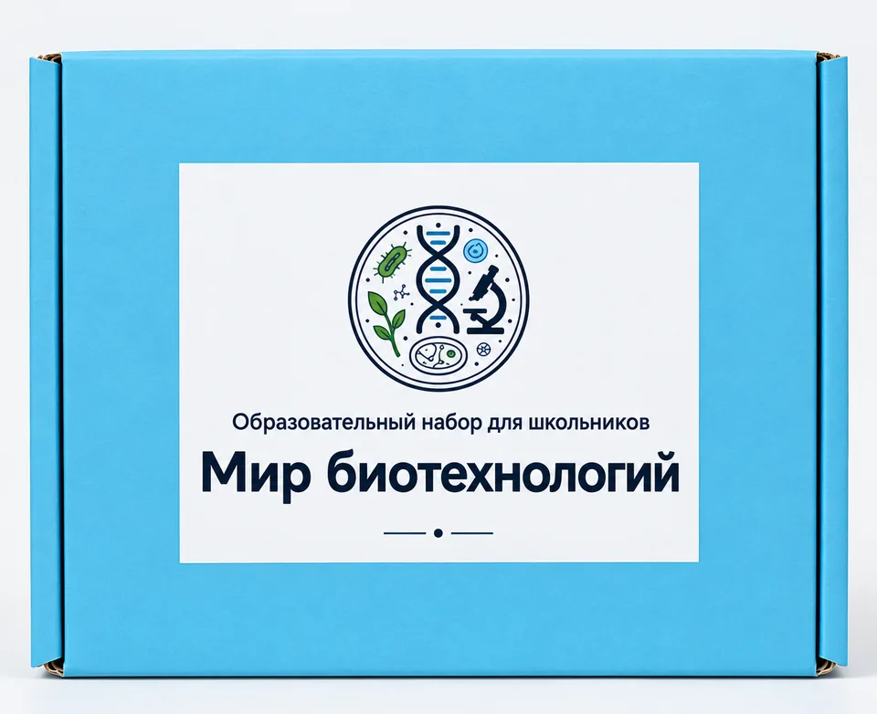
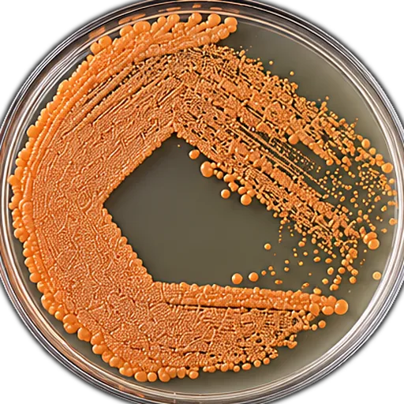
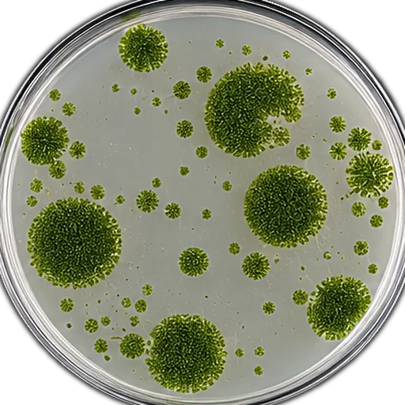
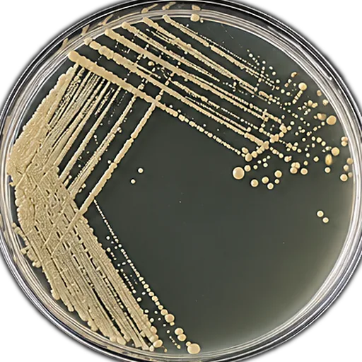
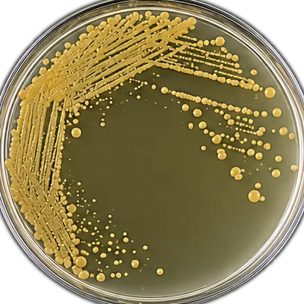
01Наблюдение
В учебнике микроорганизм - это картинка на странице, у всех одинаковая. В чашке - конкретная колония со своей формой, краем, рельефом и цветом, которую вырастили именно для этого набора.
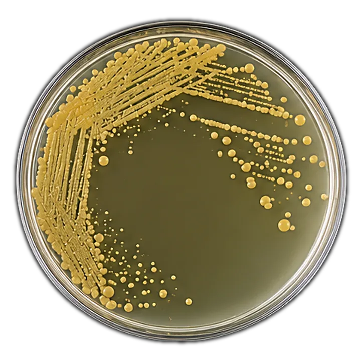
02Реальные культуры
Культуру выращивают на питательной среде, останавливают её рост и заливают прозрачным полимером. Живой она быть перестаёт, но настоящей - остаётся.
Штамм из рабочей коллекции лаборатории
Рост на питательной среде - часть готовят из гидролизатов растительных отходов
Микроорганизм теряет способность к росту
Заливка прозрачным полимером
Герметичная чашка, готовая к занятию
Почему «Мир биотехнологий»?
Не иллюстрация и не пластиковая модель - настоящая колония микроорганизма.
Не нужно самостоятельно выращивать культуры и ждать результата.
Каждая колония - это конкретное производство: от хлебопечения дрожжами до переработки нефтяных загрязнений родококком.
Готовый формат: без лаборатории, реактивов и подготовки.
Создано российскими биотехнологами.
03Комплектация
Наведите или нажмите на элемент списка, чтобы подсветить его в наборе.
Подготовленные культуры шести микроорганизмов, каждая - герметичная, промаркированная и готовая к передаче из рук в руки.
Систематика, морфология и промышленное применение каждой культуры. Материал адаптирован под разный возраст школьников - можно давать и в 8 классе, и в профильной группе.
Сценарий занятия, вопросы для обсуждения и задания - от основной школы до профильного курса.
Плотная коробка держит чашки на месте: набор нормально переживает поездку между кабинетами и школами.
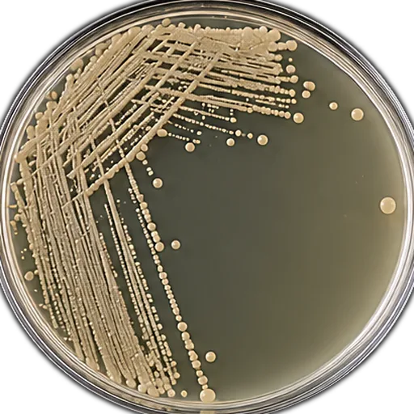
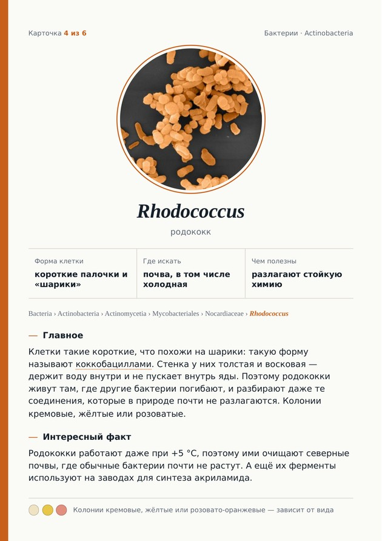
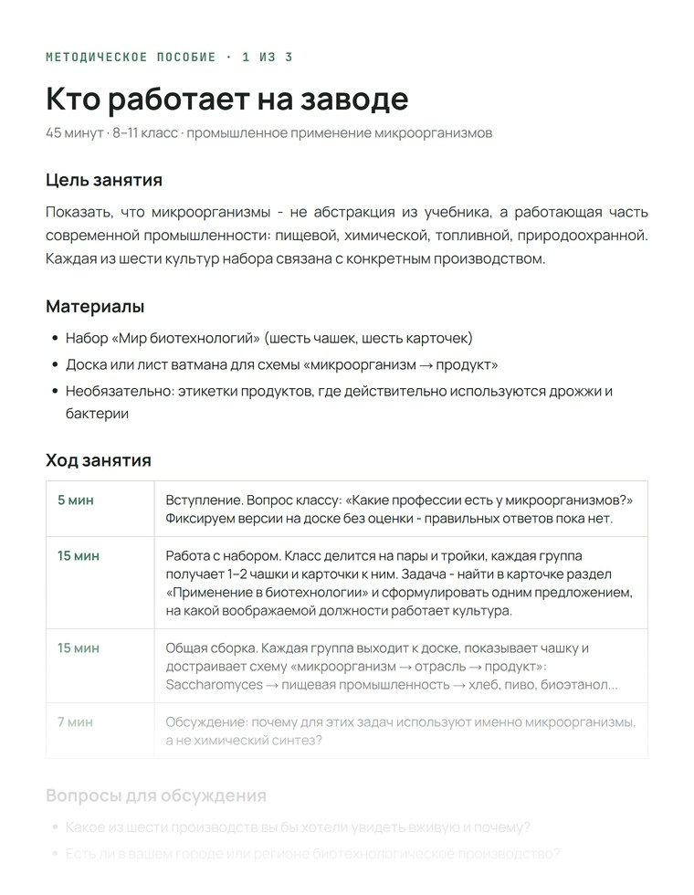
Шесть чашек Петри
04Культуры
Нажмите на чашку, чтобы рассмотреть образец крупнее и переключиться на вид под микроскопом.
05Технология
Пять этапов лабораторной работы - от выбора штамма и подбора среды до фиксации в полимере и сборки готового набора.
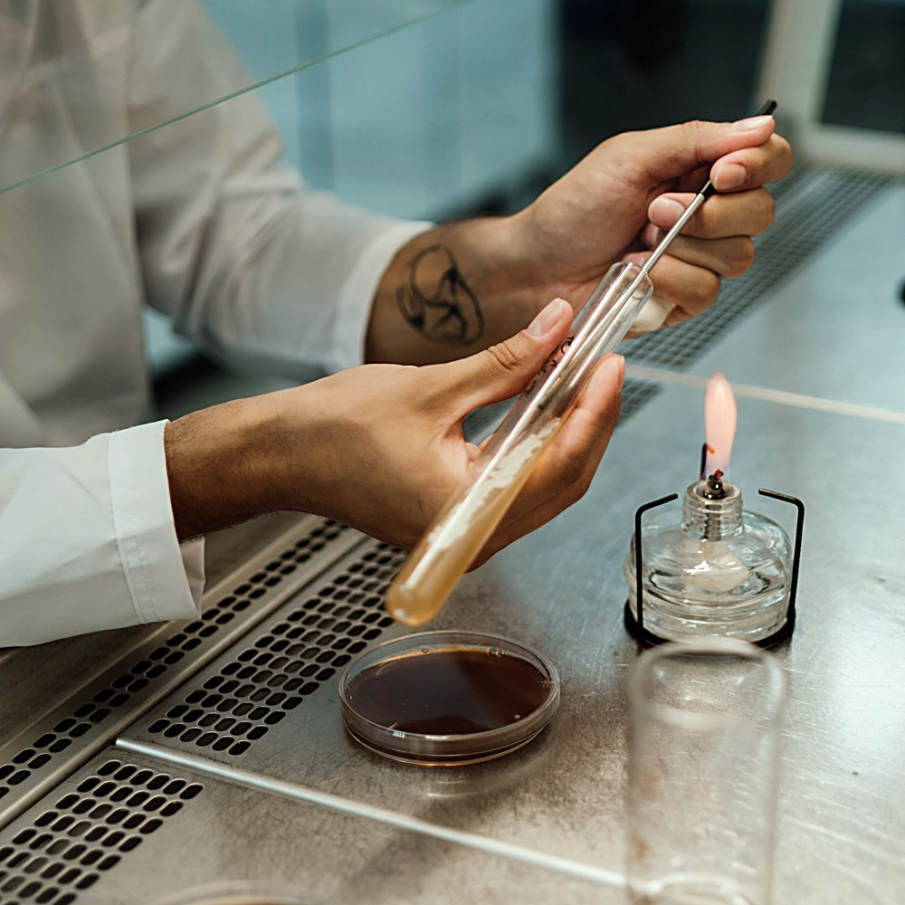
Культуру берут из рабочей коллекции лаборатории бактериологической петлёй, прокалённой на пламени спиртовки, - так соблюдают асептику и не заносят постороннюю микрофлору. Для набора отбирают штаммы, у которых колония показательна по морфологии, а применение понятно и школьнику.
У дрожжей, бактерий, водоросли и гриба разный обмен веществ, поэтому и питательная среда для каждой культуры своя - отличается и состав, и цвет. Часть сред готовят на основе гидролизатов растительных отходов: экологичнее, чем стандартные субстраты, и колонии растут не хуже.
Чашки выдерживают в термостате при постоянной температуре, отмечая дату посева на каждой. Рост останавливают в тот момент, когда морфология колонии - форма, край, рельеф поверхности - выражена лучше всего.
Культуру инактивируют - она необратимо теряет способность к росту и размножению - и заливают прозрачным полимером, который фиксирует рельеф колонии таким, каким он был в момент остановки роста.
Каждый образец взвешивают, проверяют на герметичность и маркируют, в коробку кладут карточку - и набор едет к вам.
06Сценарии
Один набор закрывает и урок биологии, и профориентационное занятие, и домашний интерес.
Биология 9–11 класс, STEAM-кружки, проектная деятельность, профориентация.
Микробиология и биотехнология для специальностей пищевого и химического профиля.
Промышленная биотехнология, дни открытых дверей, работа с абитуриентами.
Подарок увлечённому подростку и повод разобраться, как устроена биотехнология.
Разбираем, какой микроорганизм что производит: от хлеба до биодизеля.
Форма, край, поверхность, пигмент - учимся описывать культуру как микробиолог.
Родококк и хлорелла: очистка воды и переработка нефтезагрязнений.
07Отзывы
08Заказ
Стоимость пересчитывается сразу. Для организаций доступен счёт и отсрочка по договору.
09Заявка
Расскажем про сроки, поможем выбрать комплектацию и подготовим коммерческое предложение для организации.
10Вопросы
Нет. Перед фиксацией культура проходит инактивацию и теряет способность к росту и размножению. Образец сохраняет форму, рельеф и цвет колоний, но не является живой культурой.
Да, крышка снимается, как у обычной чашки Петри. Открывать её не обязательно - рельеф колонии хорошо виден и через крышку, в том числе с лупой, - но если хочется рассмотреть образец ближе, никаких ограничений нет.
Нет. Набор рассчитан на обычный кабинет биологии или домашний стол. Из инструментов пригодится разве что лупа - большего для работы с образцами не нужно.
Основная аудитория - учащиеся от 12 лет и старше, а также студенты. Для младших классов набор используют как демонстрационный материал под руководством взрослого.
При комнатной температуре, без прямого солнечного света, в штатной упаковке. Холодильник не нужен - это принципиальное отличие от живых культур.
Сфотографируйте упаковку и образец и напишите нам - повреждённый при доставке образец меняем. Упаковка рассчитана на транспортировку, но форс-мажоры случаются.
Да. Для организаций работаем по счёту с закрывающими документами, при партии от 5 наборов действует скидка. Оставьте заявку - подготовим коммерческое предложение.
Обсуждаемо для партий: состав культур подбирается под учебную программу. Напишите, какие микроорганизмы нужны, и мы оценим возможность.
По этому запросу ничего не нашлось. Напишите нам - ответим лично.
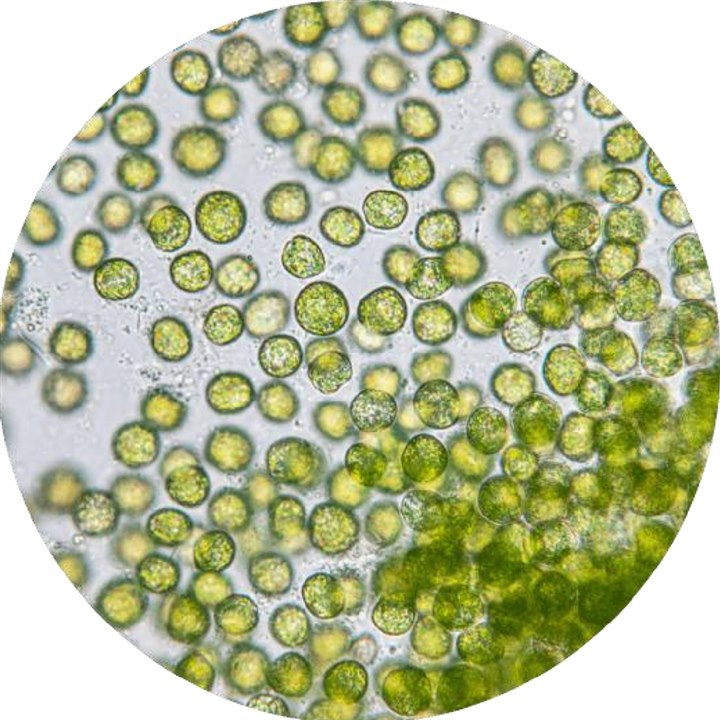
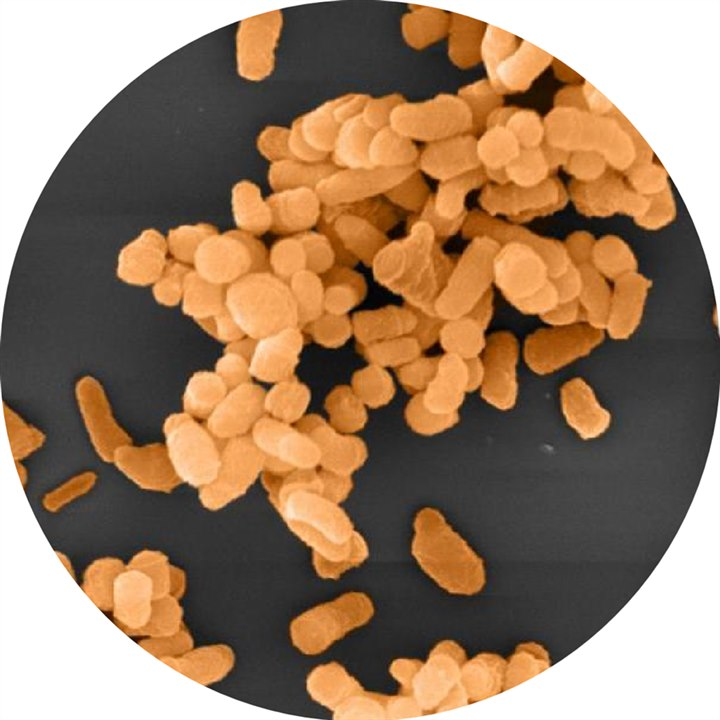
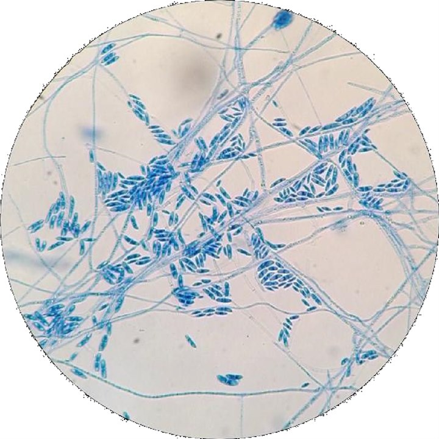
11О проекте
Идея выросла из простого наблюдения: у студентов кафедры доступ к культурам есть, а у школьника - нет. Мы взяли лабораторный образец и упаковали его в формат, который выдерживает дорогу до класса и не требует ни халата, ни допуска в лабораторию.
12Начать
Настоящие культуры. Научная основа. Формат, готовый к уроку.